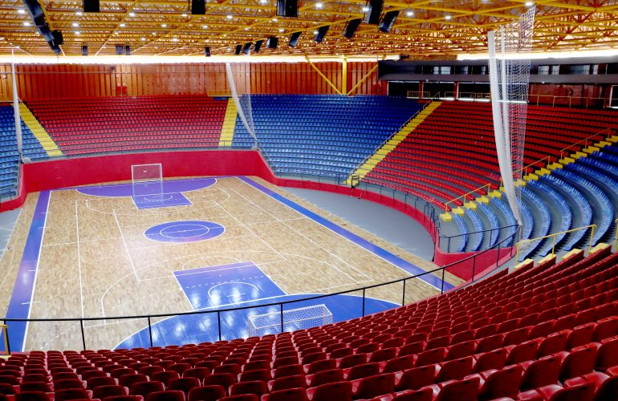

Formação de atletas com padrão de elite
Transforme talento em performance com o VK Futsal
Aqui seu filho treina com metodologia profissional, acompanhamento próximo e mentalidade vencedora para evoluir dentro e fora da quadra.
Diferenciais VK Futsal
Estrutura e processo pensados para acelerar desempenho com segurança e disciplina.
Treinos Intensivos
Sessões objetivas para evolução técnica, física e tomada de decisão em jogo real.
Mentalidade Competitiva
Trabalho de foco, atitude e confiança para atletas que querem performar sob pressão.
Estrutura de Qualidade
Ambiente organizado, seguro e preparado para treinos de alto rendimento.
Evolução Monitorada
Cada atleta é acompanhado com critérios claros para evolução contínua.
Metodologia de Alta Performance
Nossa metodologia combina fundamentos técnicos, inteligência tática e preparação mental para construir atletas completos. Cada fase tem objetivos claros e progressão estruturada.
- Base Técnica: domínio de fundamentos e repetição consciente.
- Leitura de Jogo: decisões rápidas com visão coletiva.
- Performance Física: agilidade, potência e resistência específicas do futsal.
- Formação Pessoal: disciplina, respeito e responsabilidade no dia a dia.

Resultados e Prova Social
Famílias e atletas percebem evolução visível em desempenho, comportamento e confiança.
“Meu filho evoluiu muito em poucos meses. Hoje entra em quadra com confiança e disciplina.”
Mãe de atleta Sub-13“Treinos fortes, organizados e com propósito. Aqui o atleta sente que está realmente evoluindo.”
Pai de atleta Sub-15“O VK elevou meu nível técnico e mental. Hoje jogo com mais inteligência e intensidade.”
Atleta VK FutsalAs vagas são limitadas. Garanta sua avaliação agora.
Dê o próximo passo para acelerar a evolução no futsal com acompanhamento profissional.